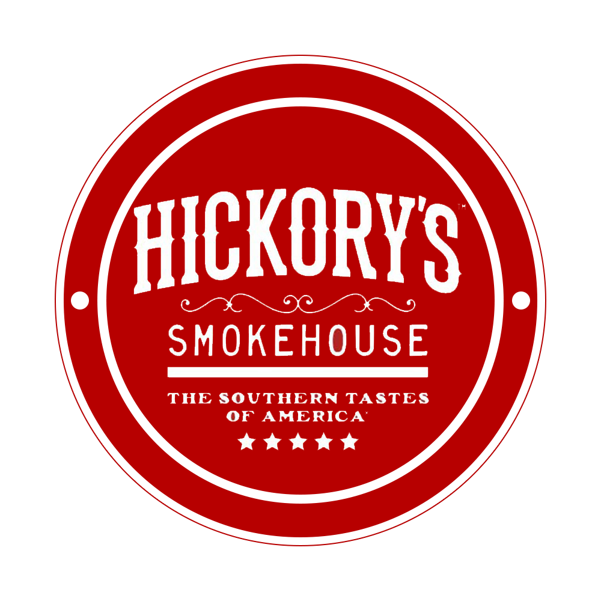

As a joint academy with youth, junior and senior teams, it was important to join the teams together on promo material advertising fixtures for their social media platforms but also tie in the differences. Therefore bold colours, matching each team's kit colours but also incorporating the overall academy colour scheme, were used. Sponsors' logos, team logos and bold fonts, as well as using the supplied slogan created a brand that can be stuck to going forwards.
⇩
Colour scheme matched throughout with the new kit colours for the three teams.

⇩
Clean, minimal font use. Concise and communicates necessary information.
⇩
Strong imagery highlighting the players at the heart of the club.
⇩
Kit designs produced as well as promotional material.
⇩
Clean, white background offers a strong contrast for the posters, making the information pop.

⇩
Senior, junior and youth teams sectioned but grouped together to show the club's different teams but family attitude.

⇩
Adoption of the team slogan.
⇩
Redesign of the sponsor's logo to match the team brand.
⇩
Further sponsorship re-working for kit patches.